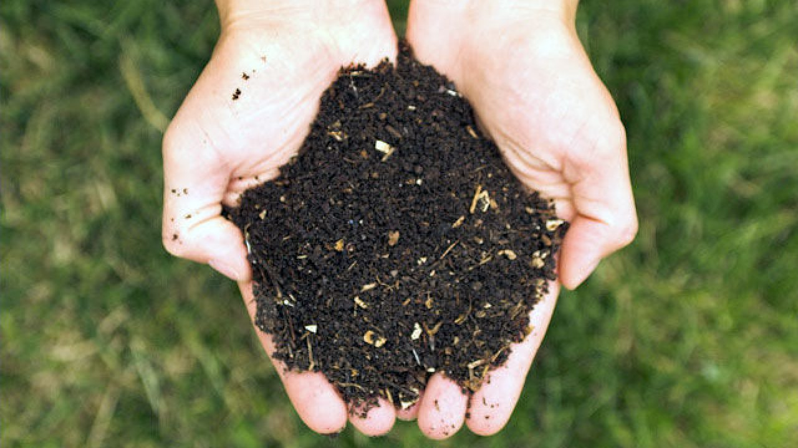
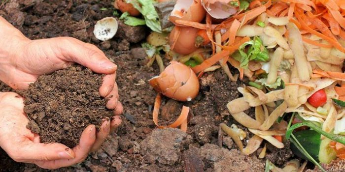
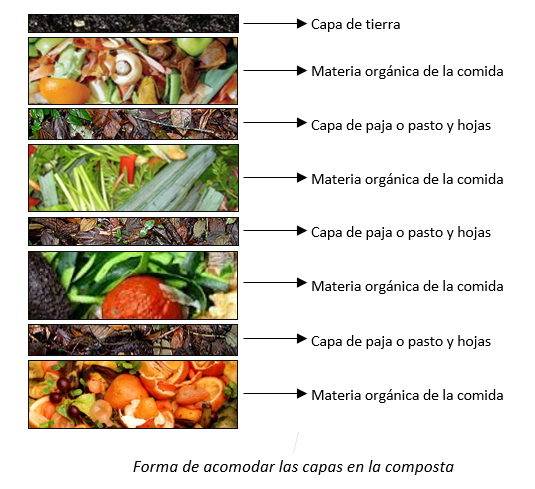

Método de composteo y principios generales
Biología
La pila de composta es realmente una granja abundante de diversos organismos.
Las bacterias inician el proceso para deshacer la materia orgánica. Son las primeras en romper el tejido de las plantas
y también las más numerosas y efectivas. Hongos y protozoarios pronto se unen a las bacterias y más tarde se introducen
cochinillas, ciempiés, escarabajos y lombrices de tierra para hacer su parte.
Humedad y aireación
Ya que son microorganismos los que producen la composta, se requiere aire y agua para que ellos sobrevivan.
Básicamente, la pila de composta debe estar bien aireada y revolverse semanalmente para permitir el máximo
de penetración del oxígeno. La pila deberá guardarse con la humedad de una esponja mojada. Demasiada o poca humedad,
o muy poco oxígeno puede afectar adversamente la producción de composta.
Tamaño
El calor generado a través de la actividad biológica en la pila de composta, es importante para su producción.
Generalmente las pilas más pequeñas (de 1 m3) no son del tamaño suficiente para generarlo. Las pilas más grandes (1.5 m3),
generalmente, no tienen adecuada aireación, a menos que sea volteada periódicamente. Idealmente la pila de composta debe
tener cerca de 1.2 metros cúbicos de capacidad.
Tiempo
Del calor que alcance la composta, dependerá la rapidez con la cual esté lista. Si se usan materiales con una adecuada relación de carbono y nitrógeno (C y N), si están finamente picados, bien húmedos, aireados y volteados periódicamente, se tendrá una composta caliente y rápida que puede ser usada en un mínimo de 3 ó 4 semanas, de lo contrario está en 2 ó 4 meses.
Cada organismo tiene un porcentaje de carbono y nitrógeno (C y N) en sus tejidos, qué varía desde 500 partes de C por 1 de N (relación 500:1), como en el aserrín o de hasta 20:1 como en los recortes de pasto. Una relación de 30:1 es ideal para la actividad de los desintegradores. Este balance se puede lograr mezclando dos partes de recorte de pasto, con una parte de hojas secas en la composta.
Generalmente los materiales de color café obscuro como hojas caídas y aserrín, son altos en carbono, mientras que los materiales verdes tales como los recortes de pasto y maleza son altos en nitrógeno.
Incluso para reducir el tiempo del proceso de compostaje, se puede adicionar un “acelerador” qué consiste en una mezcla de partes iguales de cáscara de naranja -previamente picada- y de bagazo de zanahoria, o bien un puñado de fertilizante comercial, rico en nitrógeno.
¿Cuándo sé que la composta está lista?
Se puede saber de dos maneras. Una composta terminada generalmente estará compuesta de pequeñas partículas de color café y se observará y olerá a tierra. Además el calor producido por la actividad biológica durante el proceso de composteo también habrá terminado. Colocando la mano dentro de la pila de composta de tiempo en tiempo, puede permitir asegurarnos de este proceso.

¿Cómo construyo mi composta?
Los diseños para composta varían en formas, tamaños y diseños. Para elegir alguno se debe determinar la cantidad y el tipo de desperdicios que se producen en nuestro hogar en una semana. La composta se puede hacer en hoyos, cajones de madera con tela de alambre o utilizando tambos.
En el caso de que sólo se tengan desperdicios de comida, enterrar los desperdicios es el método más simple de elaboración de composta. Para hacerlo conviene fragmentar todas las piezas grandes y enterrar el material, al menos a 20 cm de profundidad, debajo de la superficie de la tierra. Los hoyos cubiertos, llegan a ser usables como espacios para jardín, en la siguiente estación.
Este es un método simple, pero debido a la ausencia de aire, algunos nutrimentos no se utilizan. Roedores, perros, moscas y mal olor podrían llegar a ser un problema, si los desperdicios no son enterrados a más de 20 cm de profundidad.
Si se vive en la ciudad y no se tiene jardín, es importante que el recipiente para composta sea resistente a los roedores, para evitar proveerles de alimento y resguardo. Es conveniente en estos casos, encerrar el material de composta, en un contenedor o en una malla de alambre.
Existen gran variedad de recipientes para composta: de malla de alambre, de tablas (puedes ser un huacal) o de tabiques.

Preparación
Entre más área de superficie tengan los microorganismos para trabajar, más rápido se producirá la composta. Fragmentando o picando el material antes de llevarlo a la pila de composta, acelerará el procedimiento inmensamente.
Una vez que tengas estos materiales, en tu jardín o en un recipiente de buena capacidad deberás seguir los siguientes pasos:
- En el fondo del recipiente o en la zona que hayas destinado en tu jardín, coloca una capa de la materia orgánica que tengas disponible. Humedece la materia orgánica.
- Encima de la capa de materia orgánica, agrega una capa delgada de paja o pasto y hojas.
- Repite las capas 1 y 2 sin rebasar el 1.2 m de alto.
- Finalmente cubre con tierra.
- Voltea la composta con la ayuda de una pala a las dos semanas de haber establecido la composta, los volteos posteriores serán semanales.

Tips de interés
- Es mejor tener al menos dos pilas de composta. De esta manera cuando una está llena y procesándose, la otra podrá irse preparando.
- Cuando la composta se hace en un cajón de madera o tela de alambre, se inicia con tierra en el fondo de la caja. Después se agregan desperdicios de cocina cubriéndolos con una misma cantidad de desperdicios de jardín (pasto y hojas) o de tierra.
- Evitar que la composta se seque o tenga exceso de humedad (no debe escurrir agua). Al voltear la composta se favorece la penetración de aire y se disminuyen los malos olores.
- El calor que se genera en la composta (aproximadamente 70°C),sirve para matar los huevecillos de insectos y a aquellos microorganismos que pudieran causar enfermedades.